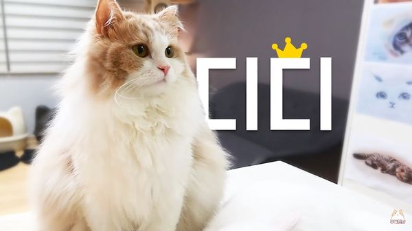

|  | |
| 이름 | 디디 |
|---|---|
| 출생 | 2016년 1월 추정 |
| 품종 | 노르웨이 숲 믹스 / 크림 코트 |
| 눈 색 | 골드 |
| 성별 | 남아 |
| 몸무게 | 6.02kg(20.11.06) |
| 꼬리 길이 | 34cm |
| 별명 | 둔둔이, 둔둔쓰, 털뚠이쉐킷, 인절미등 |
초대 멤버 중 한 마리이자, 크림히어로즈 채널의 마스코트 격인 고양이. 초기 크림히어로즈의 마크, 웹사이트의 로딩 이미지, 그리고 최초 에코백 등 사실상 크림히어로즈의 아이콘이라 할 수 있다. 애초에 크림히어로즈의 이름 유래도 디디의 크림색이 예뻐서 거기서 본따왔다고 한다. 품종은 노르웨이 숲인데, 믹스인 것으로 보인다. 순종 놀숲은 이마와 코가 옆에서 보았을 때 일자에 위치해있고, 귀끝과 턱이 정삼각형을 이루어 머리가 비교적 길고, 날렵하다는 인상을 준다.[10]반면 디디는 동글동글한 외모를 하고 있고, 얼굴의 길이가 짧으며 이마와 코 사이가 들어가 있다. 디디가 펫샵 출신인지라 조상에 대한 정보가 없고, 외양으로 미루어봤을 때 놀숲 믹스라는 것 외에는 알 수 없어서 팬덤 내에서도 품종에 대한 토론이 종종 일어난다. 크히 마이너 갤러리에서는 얼굴형이나 체형을 보면 노르웨이 숲과 놀숲의 친척 격인 시베리안 고양이의 믹스가 아닌가 하는 추측이 지지를 받았다. 그리고 털이 엉키는 것을 보면 조상중에 페르시안도 있을 것 같다는 이야기가 나왔다. 크집사 역시 디디의 선조 중에 페르시안이 있는 것 같다고 언급. 2018년 10월에는 크히갤에서 디디가 랙돌이나 랙돌에서 갈라져 나온 라가머핀과 닮았다는 이야기가 많은 공감을 샀다. 실제로 랙돌과 성격이나 프로파일이 비슷한 편이다. 물론 모두 어디까지나 추측이고 정확한 것은 불명.
서열이 가장 높을 것으로 추측된다. 덩치가 굉장히 크고 수컷이라 7마리 중 힘이 가장 세다고 한다. 집사한테 강제로 케어 받을때는 100g짜리 발판도 들어올렸고, 크리스마스 트리, 집사가 널어놓은 빨랫대, 고양이용 미끄럼틀을 몸으로 밀어 혼자 넘어뜨린 적이 있다. 하지만 다른 고양이들과 캣파이팅이 걸려도 먼저 자리를 피하는 온순한 성격인지라 동생들의 등쌀에 밀려 장난감이나 식사를 양보하기도 한다. 디디가 싫어하는 곳을 루루가 핥아도 가볍게 깨물거나 발로 살짝 밀어내기만 할 정도. 다만 체급이 체급인지라.. 한 번은 생방송 도중 티티가 계속 날린 냥냥펀치에 폭발해 날린 반격 한 방에 티티가 나가떨어진 적도 있다. 그리고 디디와 티티가 제대로 붙으면 디디가 가볍게 이기는걸 볼수 있다. 3:32초를 보자 확실히 싸움을 피하고 싫어할 뿐이지, 못하는 것은 아니다.[11] 평소에 서열 관계없이 잘 놀아서 그렇지 일단 고양이들 사이에서도 디디가 서열 1위라는 인식 자체는 존재하는 모양. 아주 가끔 디디가 코코나 모모 같은 다른 수컷 고양이들에게 사냥놀이를 걸 때면 다들 도망친다. 루루가 알려주는 서열 설명 영상에서도 1위라고 소개된 것을 보아 집사는 디디를 확실한 1위로 보고 있는듯. 그래서 그런지 몰라도 집사는 7냥이 중에서도 디디에게 많이 의지하는 모습을 볼 수 있다.
유독 엉덩이 목욕을 하는 빈도가 다른 장모종 고양이들에 비해 높은데, 엉덩이 털에 끙가를 자주 묻히고 다니기 때문. 워낙 대변과 관련된 에피소드가 많아서 크림히어로즈를 '끙가히어로즈'로 이끌어가는 장본묘. 기본적으로 덩치가 있다보니 배변량이 많고 집사의 말에 따르면 물을 상당히 많이 먹어 변이 묽은 것도 참사의 원인. 거기에 꼭 끼는 곳을 좋아하여 크기가 큰 화장실이 있음에도 굳이 본인 몸에 안 맞는 꼭 찡기는 작은 화장실에 들어가 일을 보는 것도 한 원인으로 추정된다. 목욕하는 티티를 구경하러 왔다가 엉덩이가 발견되어 디디까지 목욕한 일도 있었다.두마리 고양이가 같이 목욕했더니 생긴일 결국 집사의 판단 하에 뒷다리부터 엉덩이까지 직각컷을 하였으나, 여전히 자주 묻는 듯 하다. 묽은 변을 보는 것이 걱정이 돼서 집사가 병원에 물어봤지만 묽은 변을 보더라도 물을 많이 마시는 편이 더 좋다고 한다.
디디의 풍성한 털이 자꾸 뭉처서 집사가 겨울이 되기 전에 땜빵 고양이가 될까 매우 염려하고 있다. 집사도 이를 걱정해서 백방으로 찾아보았는데, 털이 뭉치는 현상이 페르시안 고양이 말고는 거의 없는 현상이라 정보가 없다고 한다. 그나마도 일일이 찾아서 자르는 것 외에는 답이 없다는 결론을 내리고 열심히 뭉친 털을 자르고 있지만, 디디는 숱가위를 집사 몰래 소파 밑에 숨겨버릴 정도로 싫어한다. 디디의 미용에 대해서는 '털없는 디디는 아닌 것 같다' 는 말로 대신 하며 미용 의사는 없는 듯하다. 방송에서 털을 빗기 싫어하는 디디에게 집사가 '너 털 짧게 밀면 스트레스받고 그러잖아'라고 하며 털을 빗을 것을 권유하는데, 이게 진짜 털을 민 적이 있는건 아니고 엉덩이 털을 깎는데 디디가 스트레스 받는걸 지칭하는 것. 드라이기나 미용기의 진동음에 대한 스트레스를 심하게 받는 편이다.
빨간 공을 매우 좋아하며, 날벌레를 보면 채터링을 한다. 집안에서 좋아하는 장소는 책상 위. 기분이 좋지 않을 때는 화장실과 캣타워 사이의 공간에 콕 박혀서 웅크린다.
온순하고 다정해서 목욕을 하고 멘붕한 아기 고양이들에게 꼬박꼬박 그루밍을 해 주거나 라라나 루루가 그루밍해달라고 신호를 보내주면 꼬박꼬박 해주는 등, 어린 고양이들을 돌보는 것은 대부분 디디의 역할. 집사가 라라에게 하는 말로 보아선 라라가 가끔 똥을 밟을땐 그것도 떼주는듯 하다. 그리고 새로 온 아깽이 도도, 토토에게도 관심이 많은 것 같다. 특히나 라라의 경우는 이제 꽤나 컸는데도 유독 보호해 주고 그루밍을 해 준다. 이 모습이 마치 나이 차이가 많이나는 사이좋은 오빠, 여동생 사이를 연상시킨다.
굉장히 조용하며, 목욕하거나 날벌레가 집에 들어오지 않는 이상은 어지간해서 울지도 않는다. 워낙 온순한지라 집사의 양털깎기대회 연습의 대상이 되는 모습도 자주 볼 수 있다. 물론 스트레스 자체는 많이 받는지라 가위를 숨겨버리고 바리깡 소리에 격하게 반응하기도 하지만, 아주 울고불고 난리가 나는 다른 고양이들과는 다르게 간식 한 번이면 풀린다. 하지만 그 온순한 성격 뒤에 은근히 사냥꾼 본능이 남아있는지, 집사가 드론을 날리거나 집 안에서 날벌레를 발견하거나 하면 채터링을 하고 흥미를 감추지 못하는 모습을 보인다. 날아가는 드론을 향해 전력질주하거나 점프하는 등, 평소의 덩치와는 다르게 날쌘 모습도 종종 보여준다. 2018년 들어서는 수동 드론(발사기에 끼워서 돌린 후 버튼을 누르면 날아가는 장난감.)을 집사가 많이 날려 준다. 간혹 집사들 중에 이 장난감이 무엇인지 궁금해하던데, "총 프로펠러"라고 검색하면 비슷한 제품을 구입할 수 있다. 겨우 찾았다 하악하악
입이 매우 짧다. 집사가 아무리 자연식품을 요리해도 재료나 조리법에 따라서는 먹지 않는 경우가 허다하고, 때문에 '과연 디디가 오늘은 집사의 음식을 먹을 것인가'가 생방의 큰 관심사가 된다. 육류 중에서는 소고기나 돼지고기보다는 닭고기, 생선류 중에서는 흰살 생선류를 선호하는 편이나, 조리 방법이나 당일 컨디션에 따라 심하게 호불호를 타기 때문에 도저히 무엇을 좋아하는지 알아내기가 힘들다. 가령 다른 고양이들이 가쓰오부시를 양념으로 넣을 때도 디디 몫만은 넣지 않고, 특히 계란을 싫어하는 듯 하여 다른 음식에 어쩌다 계란 냄새만 배어도 절대로 입에 대지 않는다. 크집사가 고양이에 대한 지식이 적던 시절, 간식을 많이 먹이면 고양이에게 좋지 않다는 말을 들어 디디가 어렸을 때부터 간식을 줄이고 사료 위주로 밥을 먹였더니 간식도 거의 밝히지 않는 고양이로 자랐다고 한다.
그래도 유달리 좋아하는 음식이 있으니 '빵'이다. 빵 봉지에 머리를 들이미는 경우가 흔히 보이는데다 집사도 '둔둔 빵 좋아' 라는 대사를 할 정도로 빵을 좋아하는데 집사에 따르면 빵에 들어간 버터 향을 좋아하는 것 같다고 한다. 그렇지만 디디는 밀가루나 전분류는 제대로 소화시키지를 못해서 빵을 많이 먹일 수가 없다. 크림 집사가 아이들의 식사를 마련하면서 밀가루나 전분류의 사용을 꺼리는 이유가 여기에 있다. 워낙 고양이들이 밀가루, 전분류를 소화하기 힘들어 하는데다, 디디의 경우 특히 그 정도가 심했기 때문. 이 때문에 밀가루나 쌀 역할을 대신할 재료로 흰살생선이나 닭가슴살을 다져서 쓰는데, 당연히 전분 특유의 찰기가 하나도 없기 때문에 집사의 요리를 더더욱 괴작스럽게 만드는 데 한몫하고 있다. 대신에 식사가 만족스럽지 못하면 계란껍질을 부엌 곳곳에 널브러트려놓는 등 소심하게 복수하는 일면도 있다. 집사의 말에 따르면 안 먹는 게 아니라 다른 고양이들이 먹는 것을 보고 뭔가 먹고는 싶은데 마음에 들지는 않고, 자신의 마음에 드는 그 무언가를 찾으려고 부엌을 배회하다가 없으면 화풀이하는 것이라고 한다.미식가 디디선생님
17년 여름 들어 털이 좀 빠지기 시작했는지 집사가 디디에게 다양한 영양제들을 먹이기 위해 백방으로 노력하였으나 항상 뱉어버려 집사의 걱정이 이만저만이 아니다. 다행히 8월 들어서 디디가 겨우 입을 대는 영양제를 찾아서 털의 윤기가 회복되는 중.
사료도 새로운 걸로 바꿨더니 며칠 동안 단식했다 하였으며 츄르와 비슷하게 만든 한방 건강 간식을 가져왔으나 고양이 중 유일하게 거부했다. 기름 냄새가 나거나 이것 저것 섞어서 조리한 음식 등 뭔가 평소와 다른 음식을 선호하지 않는 모양이지만, 여전히 디디가 어떤 스타일의 음식을 좋아하는지는 크림히어로즈의 큰 미스테리로 남아있다. 2017년 6월 들어서는 일주일 가량 집사가 요리한 특식을 먹지 않는 기간도 있었으나, 9일 방송에서 육수에 삶아준 닭고기를 먹고 처음으로 디디가 설거지냥이가 되는 대사건이 발생했다. 참다 못한 집사가 디디를 위해 '7첩 반상'을 독상으로 차려준 결과, 한참을 고민하더니 가까스로 삶은 닭고기를 입에 댔다. 어렸을 때부터 닭고기만큼은 종종 접했던 모양이라, 역시 이 입맛을 떠나지 못하는 듯. 많은 고양이들이 먹기를 거부한 칠면조도 웬일로 디디는 잘 먹었다. 닭고기랑 비슷한 조류라서 그런 듯. 종종 식탁 위 특별석에 올리고 집사가 손으로 먹여주면 먹기도 한다. 이 때문에 과거 별명이 '프린스 디디'. 요즘은 잘 안 쓰인다.
순둥순둥한 이미지에 비해 상당히 똑똑하다. 집사가 컵에서 간식을 꺼내먹는 놀이를 해 보려고 해도, 집사가 간식을 가지고 있다는 사실을 알아채고서는 게임엔 통 관심을 가지지 않고 집사를 지그시 바라보기도 하고, 막상 또 게임에 흥미가 생기면 완벽하진 않아도 집사의 의도대로 움직여주는 몇 안 되는 개체이다. TV를 통해 밥그릇에 사료를 담는 영상과 소리를 보여줘도, 그게 가짜인 것을 아는 것인지 그저 멀뚱멀뚱 바라보기만 하기도 한다. 7월 25일 라이브에서 집사의 말에 따르면 디디가 직접 장난감을 켜서 놀았다(!)고 하며, 간간히 찬장 문을 열고 츄르를 약탈하거나 아예 간식이 든 집사의 가방을 뒤지는 등 약삭빠른 행동을 보여준다.
그와 연관되 어 앞발을 굉장히 잘 쓴다. 10월 29일 영상에서는 신발장 문, 화장대 서랍문, 주방 수납장 문을 여는 등 여닫는 방식이 다양한 문들을 어떻게 열어야 하는지 인지하고 있음을 보여주었다.# 심지어 실패하긴 했지만, 손잡이를 잡고 당겨서 열어야 하는 문에 발을 집어넣고 잡아서 열기도 했다. 또 집사가 오븐에서 먹을 것을 꺼낼 때도 먹을 것보다 오븐의 문이 열리고 닫히는 구조 자체에 관심을 보이기도 한다. '고양이 아이큐'라는 책에 의하면 아이큐가 높은 고양이는 앞발을 손처럼 잘 쓰고 음식도 많이 가리는 등의 행동을 한다고 한다. 디디는 일곱 고양이 중에서 유독 손을 많이 사용하는 편이다. 귀찮아서 몸을 움직이지 않고 손만 쓰는 것일 수도 있지만 IQ가 높을수록 귀차니즘이 심하다는 연구결과도 있긴 하다
물론 그 똑똑하고 호기심 많고 손을 잘 쓰는 특성 때문에 크리스마스 트리를 넘어뜨려서 다른 고양이들을 모두 놀라 달아나게 하거나 빨래 건조대를 넘어뜨리는 등 순둥이 이미지와는 달리 사고를 많이 치는 편. 18년 1월 18일 영상에서는 집사의 아이패드를 고장내고 말았다.[12] 2019년 키티사우루스 vs 죽은 척 영상에서도 미니 트리를 넘어뜨리는 것을 보면 트리 넘어뜨리기에 재미가 들린 것 같다.
낯선 곳에 적응을 잘 하지 못하는 일면도 있다. 집사와 코코, 츄츄와 함께 잡지 사진을 찍으러 갔을 때 사진 찍는 내내 굳은 모습으로 있었다. 스트레스를 받아 좋아하는 간식도 먹지 않았고 중간에 이동장으로 들어가버렸다. 그와 반대로 바깥 세계에 대해 많은 관심을 보이기도 한다. 창 밖을 응시하기도 하고, 현관에서 유독 밖으로 나가려는 모습을 보이기도 한다. 현관문을 따려는 시도는 덤.
사람을 좋아한다. 2019년 2월 27일 영상에서는 인도네시아어 담당 자막고양이[13]와 그의 13개월 아들이 찾아왔는데, 7마리 고양이들 중 티티와 함께 반겨주는 모습을 보인다. 첫 만남부터 아기에게 부비적거리고 따라다니며 주위를 맴도는 모습을 보이면서, 사람 아기를 처음 만난 것 같지 않은 모습을 보인다.[14] 아기가 좋은지 '야옹' 하고 울었다. 영상 내내 관심을 보이면서 스킨십도 하는 등, 디디의 다정다감한 면모를 많이 볼 수 있는 영상이었다. 아기뿐 아니라 어른 손님인 옆동네 큰고양이집사가 왔을 때에도 다른 고양이들에 비해 경계심이 없이 안내를 하듯 맞이해 주고 애교도 부릴 줄 알아서 팬덤 사이에서 '접대냥이'라는 평가를 받기도 한다. 19년 12월 19일 영상
크집사가 크링크 채널에서 게임 라이브를 하면서 밝혀진 사실은 기존에 보여준 이미지보다 훨씬 더 집사 바라기라는 점이다. 집사가 평일에는 밤 10시부터 자정까지 대략 두 시간 정도 게임 라이브 겸 토크 방송을 하는데, 방송 내내 하얀 의자에 누워서 자다가 방송이 끝날 쯤인 11시 45분 경이면 집사에게 부비적대며 쓰다듬어달라고 다가오는데 (현 게임중독방지위원회 위원장), 디디는 집사가 자신이 원하는 만큼 쓰다듬어주길 원하지만 집사가 디디를 쓰다듬고 다시 게임 방송을 진행하면 이내 삐져서 엉덩이를 보이며 뒤돌아서 있는 모습을 고양이 카메라로 볼 수 있다. 그러다가 디디가 삐지기도 했고, 자정이니 디디와 사랑해 놀이를 하러 가야겠다며 방송을 종료하는 것이 패턴. 디디가 방종 시점까지 잠을 자거나 하는 경우가 아니라면 거의 매 방송마다 방종 15분 전에 집사에게 다가오기 때문에 시청자들은 디디를 게임중독 방지 위원회장이라고 칭하고 있을 정도. 디디의 의외의 껌딱지 면모 덕분에 티티가 디디를 유독 때리는 이유를 알 것 같다는 팬들도 많다.